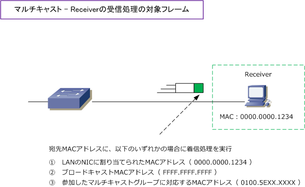

Multicast - Receiver Processing
マルチキャスト - クライアント側の受信処理
LAN接続しているクライアントPCは、LANのNICで受信したイーサネットフレームの宛先MACアドレスを見て 自分を宛先としたフレームであるかどうかを確認します。クライアントPCは、着信したイーサネットフレーム のMACアドレスが以下のいずれかである場合に、自分宛てに着信したフレームと見なして受信処理を行います。
・ LANのNICに割り当てられたMACアドレス ・ ブロードキャストMACアドレス（ FF-FF-FF-FF-FF-FF ）
次に、クライアントPCにマルチキャスト通信を利用するアプリケーションをインストールした場合は、その アプリケーションにより、クライアントPCのマルチキャストグループへの参加の制御が行われることになり そのマルチキャストグループに対応するMACアドレスが、クライアントPCへと自動的に割り当てられます。 結果、マルチキャストグループに参加したクライアントPCが受信処理するMACアドレスは、以下となります。
・ LANのNICに割り当てられたMACアドレス ・ ブロードキャストMACアドレス（ FF-FF-FF-FF-FF-FF ） ・ 参加したマルチキャストグループに対応するMACアドレス（ 01-00-5E-XX-XX-XX ）

つまり、マルチキャストグループに参加しなければ（マルチキャストを受信するアプリをInstallしなければ） クライアントPCにマルチキャストトラフィックが流れてきても、受信処理することはありません。そして、 マルチキャストトラフィックが必要なPCやデバイスだけがマルチキャストトラフィックを受信処理できます。
なお、PCは複数のマルチキャストグループに参加することも可能です。複数のマルチキャストグループに 参加した場合は、そのマルチキャストIPアドレスごとに、マルチキャストMACアドレスが割り当てられます。